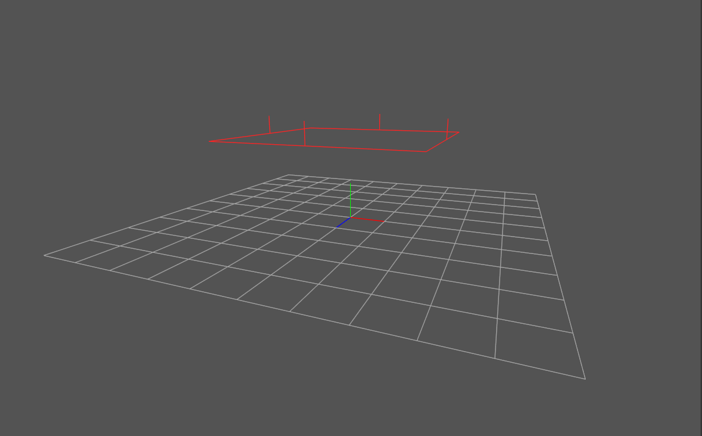

破棄ルール¶
概要¶
破棄ルールでは、パーティクルが破棄される領域を設定することができます。 もし、パーティクルにフェードアウトが設定されていた場合、それは破棄される前に適用されます。
エディタでは、ノードツリー内のノードを選択すると、設定された破棄ルールの形状を見ることができます。
箱¶
箱の内側、もしくは外側のパーティクルを破棄するために設定します。

中央¶
効果のある箱の空間の中央の位置です。
大きさ¶
中央からの箱の大きさです。 例えば、(0.5,0.5,0.5)が設定されていた場合、横幅、縦幅、高さは1になります。
内部を破棄¶
これが有効の場合、箱の内部にパーティクルが入った時、パーティクルが破棄されます。 これが無効の場合(デフォルト)、箱の外側にパーティクルが出た時、パーティクルが破棄されます。
回転拡大の適用¶
これが有効の場合(デフォルト)、エフェクトの回転拡大が箱に適用されます。 これが無効の場合、固定された大きさで軸に沿った箱になります。
平面¶
特定の場所の指定した方向にある平面を超えたパーティクルを破棄します。
平面の軸¶
平面の法線が沿う軸を定義します。 逆方向の軸はパーティクルが破棄される側を変更することができます。
例えば、軸に+Yが設定されていた場合、平面の上にパーティクルがあるとき破棄されます。一方、軸に-Yが指定されていた場合、平面の下にパーティクルがあるとき破棄されます。
平面の位置オフセット¶
軸に沿って平面がどの程度平面が移動しているか指定します・ 例えば、オフセットに1.0と+Yが指定されている場合、Y座標が1.0より大きいパーティクルが削除されます。 一方、オフセットに1.0と-Yが指定されている場合、Y座標が-1.0より小さいパーティクルが削除されます。
回転拡大の適用¶
このパラメーターが有効の場合(デフォルト)、エフェクトの方向が変わった時、面の方向が変わり、エフェクトの拡大とともにオフセットが拡大されます。 このパラメーターが無効の場合、面の方向は固定され、エフェクトが拡大してもオフセットは変化しません。